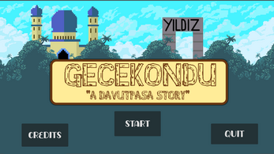

Batu 'Zycie' Kemiksiz - Game Designer
Projects
Laser Grid
An Asteroids-inspired game where you score points by avoiding obstacles. Solo development project.
Top-down Endless Runner
An experimental endless runner featuring dogs. Roles: coding, idea creation, and art.
And more arcade games like these
I made some arcade games for school events and gamejams. I also worked on some game design concepts and story trailers for future projects, showcasing creativity and narrative exploration.
Experiences
SKY LAB Computer Science Club – GameLab Leader
Leading the GameLab, mentoring junior members, planning roadmaps, and guiding the design and execution of projects. Developed leadership, collaborative, and creative problem-solving skills.
Yıldız JAM 2024 - Coordinator
Managed event organization, volunteer teams, booth setups, and workshops. Mentored teams and ensured smooth execution.
Yıldız JAM 2025 - Team Member
Assisted in booth setup, volunteer support, and designing mini-games for attendees. Strengthened teamwork and creative skills.